A tree data structure is defined as a collection of objects or entities known as nodes that are linked together to represent or simulate hierarchy.
A tree data structure is a non-linear data structure because it does not store in a sequential manner. It is a hierarchical structure as elements in a Tree are arranged in multiple levels.
In the Tree data structure, the topmost node is known as a root node. Each node contains some data, and data can be of any type.
Recursive data structure: The tree is also known as a recursive data structure. A tree can be defined as recursively because the distinguished node in a tree data structure is known as a root node. The root node of the tree contains a link to all the roots of its subtrees. The left subtree is shown in the yellow color in the below figure, and the right subtree is shown in the red color. The left subtree can be further split into subtrees shown in three different colors. Recursion means reducing something in a self-similar manner. So, this recursive property of the tree data structure is implemented in various applications.
Number of edges: If there are n nodes, then there would n-1 edges.
Depth of node x: The depth of node x can be defined as the length of the path from the root to the node x. One edge contributes one-unit length in the path. So, the depth of node x can also be defined as the number of edges between the root node and the node x. The root node has 0 depth.
The tree data structure can be created by creating the nodes dynamically with the help of the pointers. The node contains three fields. The second field stores the data; the first field stores the address of the left child, and the third field stores the address of the right child.
the file system: The file system stored on the disc drive, the file and folder are in the form of the naturally hierarchical data and stored in the form of trees.
Trie: It is a special kind of tree that is used to store the dictionary.
Heap: It is also a tree data structure implemented using arrays.
B-Tree and B+Tree: B-Tree and B+Tree are the tree data structures used to implement indexing in databases.
Routing table: The tree data structure is also used to store the data in routing tables in the routers.
General tree: • General tree: The general tree is one of the types of tree data structure. In the general tree, a node can have either 0 or maximum n number of nodes. There is no restriction imposed on the degree of the node (the number of nodes that a node can contain). The topmost node in a general tree is known as a root node. The children of the parent node are known as subtrees.
There can be n number of subtrees in a general tree. In the general tree, the subtrees are unordered as the nodes in the subtree cannot be ordered.
Every non-empty tree has a downward edge, and these edges are connected to the nodes known as child nodes. The root node is labeled with level 0. The nodes that have the same parent are known as siblings.
Binary Tree: The Binary tree means that the node can have maximum two children. Here, binary name itself suggests that 'two'; therefore, each node can have either 0, 1 or 2 children.
Properties of Binary Tree
the tree in which each node must contain 2 children except the leaf nodes.
The complete binary tree is a tree in which all the nodes are completely filled except the last level. In the last level, all the nodes must be as left as possible. In a complete binary tree, the nodes should be added from the left.
A tree is a perfect binary tree if all the internal nodes have 2 children, and all the leaf nodes are at the same level.
The degenerate binary tree is a tree in which all the internal nodes have only one children.
The balanced binary tree is a tree in which both the left and right trees differ by atmost 1. For example, AVL and Red-Black trees are balanced binary tree.
A Binary tree is implemented with the help of pointers. The first node in the tree is represented by the root pointer. Each node in the tree consists of three parts, i.e., data, left pointer and right pointer. To create a binary tree, we first need to create the node. We will create the node of user-defined as shown below:
struct node
{
int data,
struct node *left, *right;
}
In the above structure, data is the value, left pointer contains the address of the left node, and right pointer contains the address of the right node.
A binary search tree follows some order to arrange the elements. In a Binary search tree, the value of left node must be smaller than the parent node, and the value of right node must be greater than the parent node. This rule is applied recursively to the left and right subtrees of the root.
Now, let's see the creation of binary search tree using an example.
Suppose the data elements are - 45, 15, 79, 90, 10, 55, 12, 20, 50
Now, let's see the process of creating the Binary search tree using the given data element. The process of creating the BST is shown below -
As 15 is smaller than 45, so insert it as the root node of the left subtree.
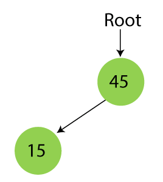Step 3 - Insert 79.
As 79 is greater than 45, so insert it as the root node of the right subtree.
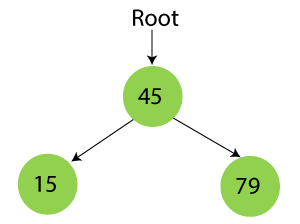Step 4 - Insert 90.
90 is greater than 45 and 79, so it will be inserted as the right subtree of 79.
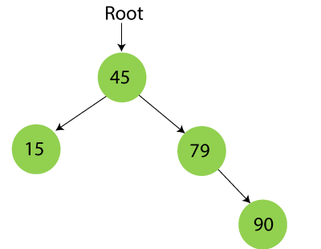Step 5 - Insert 10.
10 is smaller than 45 and 15, so it will be inserted as a left subtree of 15.
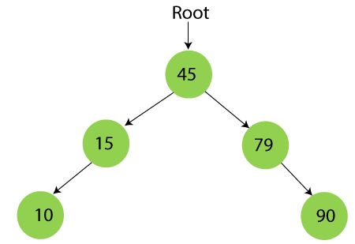Step 6 - Insert 55.
55 is larger than 45 and smaller than 79, so it will be inserted as the left subtree of 79.
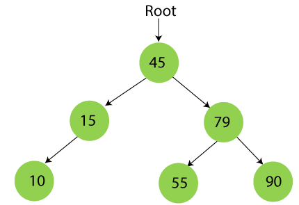Step 7 - Insert 12.
12 is smaller than 45 and 15 but greater than 10, so it will be inserted as the right subtree of 10.
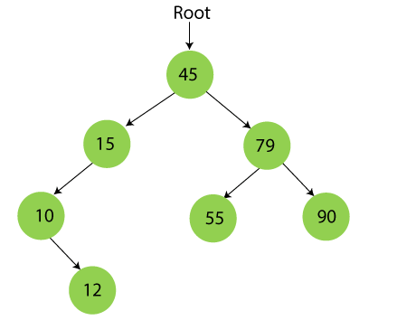Step 8 - Insert 20.
20 is smaller than 45 but greater than 15, so it will be inserted as the right subtree of 15.
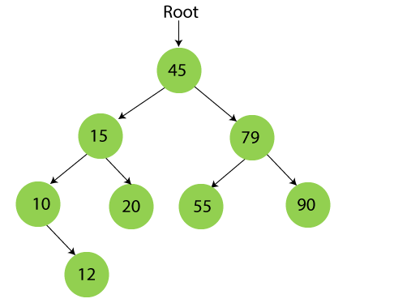Step 9 - Insert 50.
50 is greater than 45 but smaller than 79 and 55. So, it will be inserted as a left subtree of 55.
Searching means to find or locate a specific element or node in a data structure. In Binary search tree, searching a node is easy because elements in BST are stored in a specific order. The steps of searching a node in Binary Search tree are listed as follows -
Now, let's understand the searching in binary tree using an example. We are taking the binary search tree formed above. Suppose we have to find node 20 from the below tree.
Algorithm to search an element in Binary search tree
1. Search (root, item)
2. Step 1 - if (item = root → data) or (root = NULL)
3. return root
4. else if (item < root → data)
5. return Search(root → left, item)
6. else
7. return Search(root → right, item)
8. END if
9. Step 2 - END
| Operations | Best case time complexity | Average case time complexity | Worst case time complexity |
|---|---|---|---|
| Insertion | O(log n) | O(log n) | O(n) |
| Deletion | O(log n) | O(log n) | O(n) |
| Search | O(log n) | O(log n) | O(n) |
Where 'n' is the number of nodes in the given tree.
| Operations | Space complexity |
|---|---|
| Insertion | O(n) |
| Deletion | O(n) |
| Search | O(n) |
The space complexity of all operations of Binary search tree is O(n)
Traversal in Binary Search Tree
AVL Tree is invented by GM Adelson - Velsky and EM Landis in 1962. The tree is named AVL in honour of its inventors. AVL Tree is invented by GM Adelson - Velsky and EM Landis in 1962. The tree is named AVL in honour of its inventors.
If balance factor of any node is 1, it means that the left sub-tree is one level higher than the right sub-tree.
If balance factor of any node is 0, it means that the left sub-tree and right sub-tree contain equal height.
If balance factor of any node is -1, it means that the left sub-tree is one level lower than the right sub-tree.
| Algorithm | Average case | Worst case |
|---|---|---|
| Space | o(n) | o(n) |
| Search | o(log n) | o(log n) |
| Insert | o(log n) | o(log n) |
| Delete | o(log n) | o(log n) |
Due to the fact that, AVL tree is also a binary search tree therefore, all the operations are performed in the same way as they are performed in a binary search tree. Searching and traversing do not lead to the violation in property of AVL tree. However, insertion and deletion are the operations which can violate this property and therefore, they need to be revisited.
| SN | Operation | Description |
|---|---|---|
| 1 | Insertion | Insertion in AVL tree is performed in the same way as it is performed in a binary search tree. However, it may lead to violation in the AVL tree property and therefore the tree may need balancing. The tree can be balanced by applying rotations. |
| 2 | Deletion | Deletion can also be performed in the same way as it is performed in a binary search tree. Deletion may also disturb the balance of the tree therefore, various types of rotations are used to rebalance the tree. |
We perform rotation in AVL tree only in case if Balance Factor is other than -1, 0, and 1. There are basically four types of rotations which are as follows:
Where node A is the node whose balance Factor is other than -1, 0, 1.
The first two rotations LL and RR are single rotations and the next two rotations LR and RL are double rotations. For a tree to be unbalanced, minimum height must be at least 2, Let us understand each rotation
When BST becomes unbalanced, due to a node is inserted into the right subtree of the right subtree of A, then we perform RR rotation, RR rotation is an anticlockwise rotation, which is applied on the edge below a node having balance factor -2
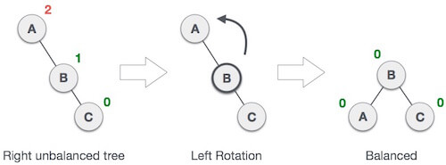In above example, node A has balance factor -2 because a node C is inserted in the right subtree of A right subtree. We perform the RR rotation on the edge below A.
When BST becomes unbalanced, due to a node is inserted into the left subtree of the left subtree of C, then we perform LL rotation, LL rotation is clockwise rotation, which is applied on the edge below a node having balance factor 2.
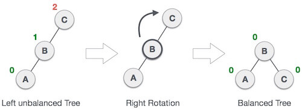
Double rotations are bit tougher than single rotation which has already explained above. LR rotation = RR rotation + LL rotation, i.e., first RR rotation is performed on subtree and then LL rotation is performed on full tree, by full tree we mean the first node from the path of inserted node whose balance factor is other than -1, 0, or 1.
That double rotations are bit tougher than single rotation which has already explained above. R L rotation = LL rotation + RR rotation, i.e., first LL rotation is performed on subtree and then RR rotation is performed on full tree, by full tree we mean the first node from the path of inserted node whose balance factor is other than -1, 0, or 1.
Tree is a specialized m-way tree that can be widely used for disk access. A B-Tree of order m can have at most m-1 keys and m children. One of the main reason of using B3 tree is its capability to store large number of keys in a single node and large key values by keeping the height of the tree relatively small.
A B tree of order m contains all the properties of an M way tree. In addition, it contains the following properties.
It is not necessary that, all the nodes contain the same number of children but, each node must have m/2 number of nodes.
A B tree of order 4 is shown in the following image.
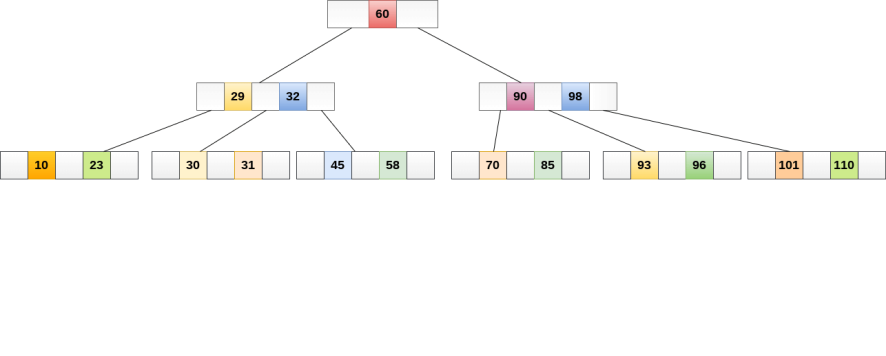
While performing some operations on B Tree, any property of B Tree may violate such as number of minimum children a node can have. To maintain the properties of B Tree, the tree may split or join.
Searching in B Trees is similar to that in Binary search tree. For example, if we search for an item 49 in the following B Tree. The process will something like following :
Searching in a B tree depends upon the height of the tree. The search algorithm takes O(log n) time to search any element in a B tree.
Insertions are done at the leaf node level. The following algorithm needs to be followed in order to insert an item into B Tree.
Example:
Insert the node 8 into the B Tree of order 5 shown in the following image.
8 will be inserted to the right of 5, therefore insert 8.
The node, now contain 5 keys which is greater than (5 -1 = 4 ) keys. Therefore split the node from the median i.e. 8 and push it up to its parent node shown as follows.
Deletion is also performed at the leaf nodes. The node which is to be deleted can either be a leaf node or an internal node. Following algorithm needs to be followed in order to delete a node from a B tree.
If the the node which is to be deleted is an internal node, then replace the node with its in-order successor or predecessor. Since, successor or predecessor will always be on the leaf node hence, the process will be similar as the node is being deleted from the leaf node.
Example 1
Delete the node 53 from the B Tree of order 5 shown in the following figure.
53 is present in the right child of element 49. Delete it.
Now, 57 is the only element which is left in the node, the minimum number of elements that must be present in a B tree of order 5, is 2. it is less than that, the elements in its left and right sub-tree are also not sufficient therefore, merge it with the left sibling and intervening element of parent i.e. 49.
The final B tree is shown as follows.
B tree is used to index the data and provides fast access to the actual data stored on the disks since, the access to value stored in a large database that is stored on a disk is a very time consuming process.
Searching an un-indexed and unsorted database containing n key values needs O(n) running time in worst case. However, if we use B Tree to index this database, it will be searched in O(log n) time in worst case.
B+ Tree is an extension of B Tree which allows efficient insertion, deletion and search operations.
In B Tree, Keys and records both can be stored in the internal as well as leaf nodes. Whereas, in B+ tree, records (data) can only be stored on the leaf nodes while internal nodes can only store the key values.
The leaf nodes of a B+ tree are linked together in the form of a singly linked lists to make the search queries more efficient.
B+ Tree are used to store the large amount of data which can not be stored in the main memory. Due to the fact that, size of main memory is always limited, the internal nodes (keys to access records) of the B+ tree are stored in the main memory whereas, leaf nodes are stored in the secondary memory.
The internal nodes of B+ tree are often called index nodes. A B+ tree of order 3 is shown in the following figure.
| SN | B Tree | B+ Tree |
|---|---|---|
| 1 | Search keys can not be repeatedly stored. | Redundant search keys can be present. |
| 2 | Data can be stored in leaf nodes as well as internal nodes | Data can only be stored on the leaf nodes. |
| 3 | Searching for some data is a slower process since data can be found on internal nodes as well as on the leaf nodes. | Searching is comparatively faster as data can only be found on the leaf nodes. |
| 4 | Deletion of internal nodes are so complicated and time consuming. | Deletion will never be a complexed process since element will always be deleted from the leaf nodes. |
| 5 | Leaf nodes can not be linked together. | Leaf nodes are linked together to make the search operations more efficient. |
Step 1: Insert the new node as a leaf node
Step 2: If the leaf doesn't have required space, split the node and copy the middle node to the next index node.
Step 3: If the index node doesn't have required space, split the node and copy the middle element to the next index page.
Example :
Insert the value 195 into the B+ tree of order 5 shown in the following figure.
195 will be inserted in the right sub-tree of 120 after 190. Insert it at the desired position.
The node contains greater than the maximum number of elements i.e. 4, therefore split it and place the median node up to the parent.
Now, the index node contains 6 children and 5 keys which violates the B+ tree properties, therefore we need to split it, shown as follows.
Step 1: Delete the key and data from the leaves.
Step 2: if the leaf node contains less than minimum number of elements, merge down the node with its sibling and delete the key in between them.
Step 3: if the index node contains less than minimum number of elements, merge the node with the sibling and move down the key in between them.
Example
Delete the key 200 from the B+ Tree shown in the following figure.
200 is present in the right sub-tree of 190, after 195. delete it.
Merge the two nodes by using 195, 190, 154 and 129.
Now, element 120 is the single element present in the node which is violating the B+ Tree properties. Therefore, we need to merge it by using 60, 78, 108 and 120.
Now, the height of B+ tree will be decreased by 1.
A heap is a complete binary tree, and the binary tree is a tree in which the node can have utmost two children. Before knowing more about the heap data structure, we should know about the complete binary tree.
A complete binary tree is a binary tree in which all the levels except the last level, i.e., leaf node should be completely filled, and all the nodes should be left-justified.
Let's understand through an example.
In the above figure, we can observe that all the internal nodes are completely filled except the leaf node; therefore, we can say that the above tree is a complete binary tree.
The above figure shows that all the internal nodes are completely filled except the leaf node, but the leaf nodes are added at the right part; therefore, the above tree is not a complete binary tree.
Note: The heap tree is a special balanced binary tree data structure where the root node is compared with its children and arrange accordingly.
How can we arrange the nodes in the Tree?
There are two types of the heap:
Min Heap: The value of the parent node should be less than or equal to either of its children.
In other words, the min-heap can be defined as, for every node i, the value of node i is greater than or equal to its parent value except the root node. Mathematically, it can be defined as:
A[Parent(i)] <= A[i]
Let's understand the min-heap through an example.
In the above figure, 11 is the root node, and the value of the root node is less than the value of all the other nodes (left child or a right child).
Max Heap: The value of the parent node is greater than or equal to its children.
In other words, the max heap can be defined as for every node i; the value of node i is less than or equal to its parent value except the root node. Mathematically, it can be defined as:
A[Parent(i)] >= A[i]
The above tree is a max heap tree as it satisfies the property of the max heap. Now, let's see the array representation of the max heap.
The total number of comparisons required in the max heap is according to the height of the tree. The height of the complete binary tree is always logn; therefore, the time complexity would also be O(logn).
Algorithm of insert operation in the max heap.
Let's understand the max heap through an example.
In the above figure, 55 is the parent node and it is greater than both of its child, and 11 is the parent of 9 and 8, so 11 is also greater than from both of its child. Therefore, we can say that the above tree is a max heap tree.
Insertion in the Heap tree
44, 33, 77, 11, 55, 88, 66
Suppose we want to create the max heap tree. To create the max heap tree, we need to consider the following two cases:
Step 1: First we add the 44 element in the tree as shown below:
Step 2: The next element is 33. As we know that insertion in the binary tree always starts from the left side so 44 will be added at the left of 33 as shown below:
Step 3: The next element is 77 and it will be added to the right of the 44 as shown below:
As we can observe in the above tree that it does not satisfy the max heap property, i.e., parent node 44 is less than the child 77. So, we will swap these two values as shown below:
Step 4: The next element is 11. The node 11 is added to the left of 33 as shown below:
Step 5: The next element is 55. To make it a complete binary tree, we will add the node 55 to the right of 33 as shown below:
As we can observe in the above figure that it does not satisfy the property of the max heap because 33<55, so we will swap these two values as shown below:
Step 6: The next element is 88. The left subtree is completed so we will add 88 to the left of 44 as shown below:
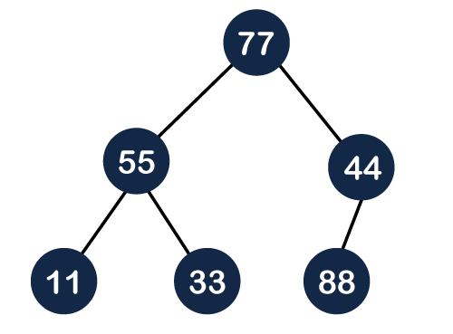
As we can observe in the above figure that it does not satisfy the property of the max heap because 44<88, so we will swap these two values as shown below:
Again, it is violating the max heap property because 88>77 so we will swap these two values as shown below:
Step 7: The next element is 66. To make a complete binary tree, we will add the 66 element to the right side of 77 as shown below:
In the above figure, we can observe that the tree satisfies the property of max heap; therefore, it is a heap tree.
In Deletion in the heap tree, the root node is always deleted and it is replaced with the last element.
Let's understand the deletion through an example.
Step 1: In the above tree, the first 30 node is deleted from the tree and it is replaced with the 15 element as shown below:
Now we will heapify the tree. We will check whether the 15 is greater than either of its child or not. 15 is less than 20 so we will swap these two values as shown below:
Again, we will compare 15 with its child. Since 15 is greater than 10 so no swapping will occur.
{kind=link}
{kind=link}
{kind=link}
{kind=link}
{kind=link}
{kind=link}
{kind=link}
{kind=link}
{kind=link}
{kind=link}
{kind=link}
{kind=link}
{kind=link}
{kind=link}
{kind=link}
{kind=link}
{kind=link}
{kind=link}
{kind=link}
{kind=link}
{kind=link}
{kind=link}
{kind=link}
{kind=link}
{kind=link}
{kind=link}
{kind=link}
{kind=link}
{kind=link}
{kind=link}
{kind=link}
{kind=link}
{kind=link}
{kind=link}
{kind=link}
{kind=link}
{kind=link}
{kind=link}
{kind=link}
{kind=link}
{kind=link}
{kind=link}
{kind=link}
{kind=link}
{kind=link}
{kind=link}
{kind=link}
{kind=link}
{kind=link}